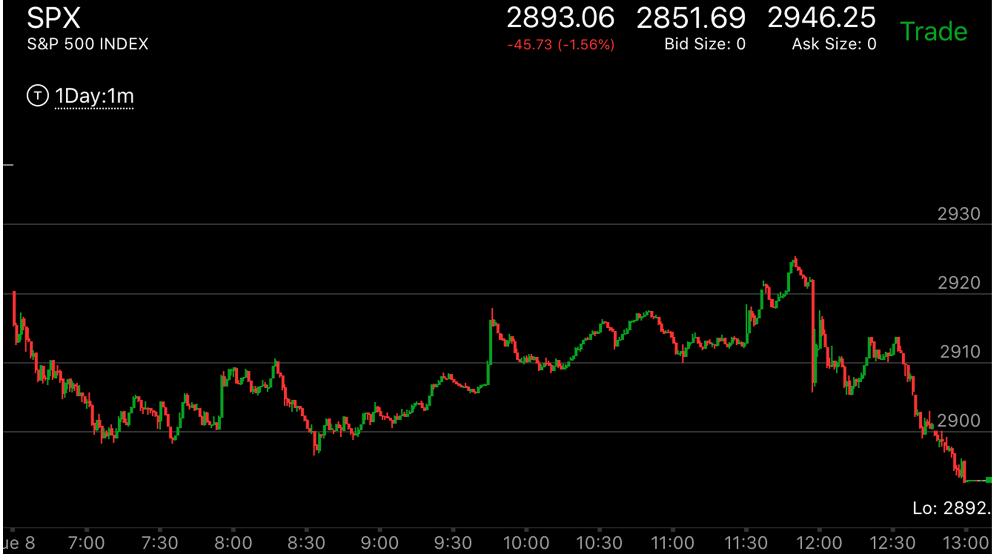
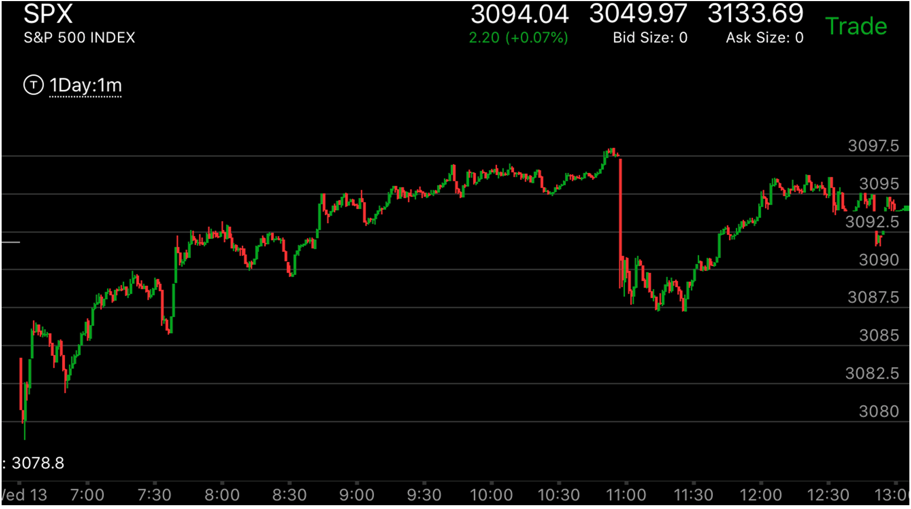
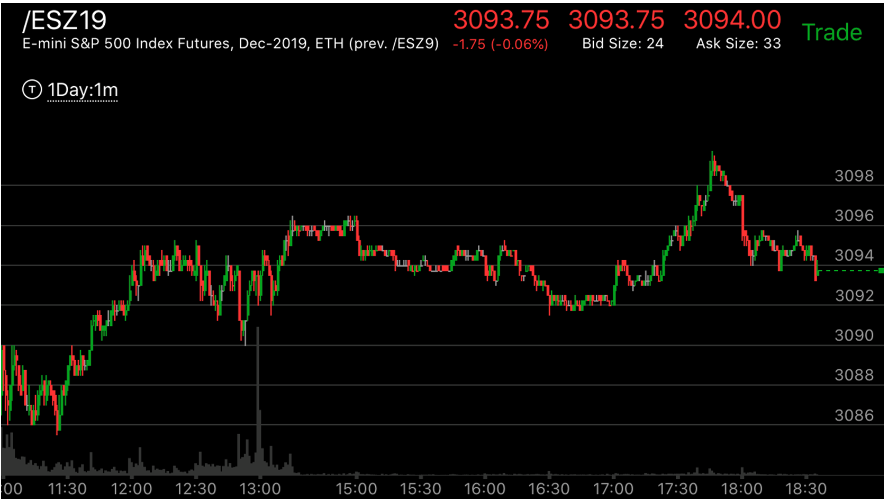

软弱的两段走势
- 软弱的两段走势，是一个大的走势前进的重要方法。它体现的软弱，是相对而言。首先，它出现了一个比较强的上涨或者下跌。然后走平，或者拉回后，出现了一个幅度接近，但是速度慢的多的
两段走势，或者新高走势。这样，它会拉回。反转这个两段走势，然后部分填补前面强大走势的真空。然后继续上涨。
- 还有一种软弱的两段走势，它是越过前面的走势后，出现了很小的两段走势，就大幅反转了。
- 它在回调的时候，常常时间很短。有时候，只有不到一分钟，快速的低于两段走势的起点，然后就继续前进了。
- 要注意这个走势和缓慢连续运动的区别。那个速度也很慢。但是连续运动幅度远远超过前面的第一段走势。所以算是反转了。

图示：8:30出现了贯通走势，它开始缓慢的不断上涨，11：40越过了前面高点，形成了第一浪，然后立刻拉回后，再次上涨，形成了第二浪，这样就反转了。
可以看到，它越过范围后，出现的两段走势很小，就可以反转。


图示：
图一：3088是前面两段走势的高点，7：30，它越过这个点，形成了第一浪，但是这个它走平很久，是个很强的第一浪，8：30它再次创新高，但是这个新高比较弱，无法反转7：30的第一浪。
而且8：30的新高，它走平很久，也是一个很强的浪。这时，9：30它再次创新高，立刻拉回，这个就是一个很好的反转对象。10：30它再次创新高，这次它在高点停留几分钟。这个就是两段走势第二浪了。
它大幅快速下跌，很快越过了两段走势的范围。所以这个是第一浪。但是看它的底部，它走出了一个相对幅度的
底部，它的第一个高点比较高，回到原位后，11：20的高点低于前面高点，再次回到原位。这样，它本身就到了底部。
另外它用的时间远远低于正向的两段走势，所以这个也是个贯通走势。它既然出现了底部，那么一定会越过走势开始的高点3097.
图二：收盘后，它果然不断的上涨，超过了3096，也就是3097对应的ES，再次走出一个小的两段走势，然后再次反转。

图示：大盘处于升势，而3014才是一个目标点，它在前面有很多阻力点，每个阻力点都走平。.7：45发生的从3014到3018冲高，才是第一浪，
它走平后，走出比较慢的两段走势。这个慢是相对于3014到3018的冲高而言的。它开始回调后，11：30出现了回调。时间很短。就结束了。开始了再次的上涨。